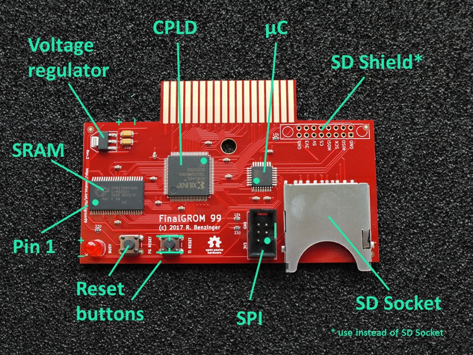
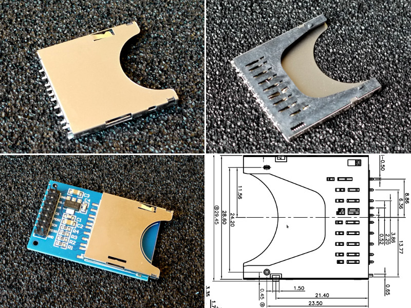

The TI 99/4A FinalGROM Cartridge, or FinalGROM 99 for short, is a cartridge for the TI 99/4A home computer that allows you to run ROM and GROM cartridge images from an SD card. It succeeds the FlashROM 99 released in 2016.
The FinalGROM 99 supports ROM images, GROM images, and mixed images of up to 1 MB in size that use the write-to-ROM bank switching scheme. The cartridge does not require the Peripheral Expansion Box and runs on both PAL and NTSC consoles, including modified consoles with an F18A. It will also run on v2.2 consoles and enables those to run ROM-only programs.
The cartridge offers some advanced modes that provide RAM and GRAM to programs. It also allows a running program to reload another program from SD card or to dump its state to SD card. All firmware of the FinalGROM 99 can be updated by SD card.
The FinalGROM 99 is released as Open Source Hardware under the CERN OHL license and the GNU GPL license. Both hardware design files and firmware sources are available on GitHub.
The project homepage with detailed instructions is located at GitHub.
Using the FinalGROM 99 is simple and doesn't require any special hardware or software.
To begin, copy some cartridge dumps or other images files onto an SD or SDHC card. You can create directories to organize your programs. Switch off the TI 99 and plug in the FinalGROM 99, then insert the SD card into the FinalGROM 99. Switch on the TI 99 and wait until the activity indicator on the FinalGROM 99 is no longer lit.
Press any key to bring up the TI menu screen. You should see the FINALGROM
99 entry. Select it to start the image browser, where you can page through
the list of available image entries with ,, ., SPACE, and number keys.
When you descend into a folder, the FinalGROM will reload its contents from
the SD card. To go back up to the parent folder, select the special folder
/ ...

Select the image you want to run. The screen will show a loader animation while the image loads. Once the image has been loaded, it will start automatically. The SD card is now no longer required and may be removed.
If only one image is found on the SD card, it is loaded immediately without the need to select it first. This method ensures maximum compatibility. Note that ROM images loaded as single-image SD card will not run on v2.2 consoles!
If you want to run a different program from the SD card, reset the TI 99 by
pressing FCTN-= and then reset the FinalGROM 99 by pushing the reset
button. If you do not reset the FinalGROM 99, the TI menu will show only
the previously selected image. Alternatively, you can power cycle the
console, which will reset both TI 99 and FinalGROM 99.
For detailed usage information please refer to the FinalGROM 99 homepage.
The GitHub repository contains all hardware design files and software sources required to build the FinalGROM 99.
Building the FinalGROM 99 is slightly more involved than building its predecessor FlashROM 99, as the FinalGROM 99 uses surface-mounted devices (SMD), of which two are programmable. For starters, this video tutorial shows how to solder SMD ICs by hand.
To build the FinalGROM 99, you need the following components:
The FinalGROM 99 board was designed with KiCad, a cross platform and
open source electronics design automation suite. The design files are
stored in pcb/ in the repository.
The size of the 330 Ohm resistor depends on the color and brightness of your LED. For bright, red LEDs, 330 Ohm is a suitable value.
Both LED and push buttons are through-hole components, so that they can be mounted on a cartridge shell and connected by wires to the board.

For the SD socket, you need a socket that has two little nubs at the bottom of the socket. Your best source for these is eBay, but check the pictures before you buy. Alternatively, you may use an Arduino SD shield that is readily available online. Make sure to pick a module that matches the pin-out of the reference module shown below. Note that the 5V input is not used, so potential substitutes must be powered by 3.3V.

With some work, the FinalGROM 99 can be mounted in a standard TI 99 cartridge shell.

If you don't want to build the board yourself, please refer to the homepage for available options.
The firmware for the ATmega 328P consists of two components. The avr/
folder contains the microcontroller logic for accessing the SD card,
generating the image browser, loading the selected image, and controlling
the CPLD. The included bootloader enables firmware updates from an SD card.
The ti/ folder contains TI 99 assembly sources for the image browser, the
GPL wrapper, and the help viewer. The assembled machine code is embedded in
the microcontroller and loaded into RAM during operation.
To build the software, first run the make.py script in the ti folder.
You will need both xas99 and xga99 assemblers from the xdt Suite to
assemble the sources. The script will also convert the generated machine
code into C code for the microcintroller.
$ cd ti/
$ ./make.py
The next step is to compile the microcontroller and bootloader code in
avr/. The included Makefiles make the compilation trivial:
$ cd avr/
$ make
$ cd boot/
$ make
The last build yields a package.hex file containing both machine code
and bootloader. You can flash the file to the ATmega 328P using
avrdude or any other programmer:
$ avrdude -p m328p -P /dev/ttyACM0 -c stk500 -U flash:w:package.hex
Additionally, you need to program the lower fuse bits of the 328P so that it runs at 8 Mhz:
$ avrdude -p m328p -P /dev/ttyACM0 -c stk500 -U lfuse:w:0xe2:m
If you're using a different tool chain make sure to set CKSEL3..0 in the
lower fuse byte to 0100. (Note that 0 means "programmed"/checked, and
1 means "unprogrammed"/unchecked).
You can verify that you're running at the right clock speed by resetting the FinalGROM 99 with no SD card inserted: The LED should blink about once per second.
For future updates, you may copy the file UPDATE.AVR generated by the
first make in avr/ to an SD card and start the FinalGROM 99 with it. This
procedure will update the microcontroller similar to avrdude, but it does
not touch the bootloader.
Programming the CPLD requires the Xilinx ISE 14.7 Web Pack to generate
a JEDEC file or an XSVF file. ISE Web Pack is freely available for Windows
and Linux. After the installation, open ISE and open the project in
vhdl/. Click on the little green arrow next to the process window to
generate a JEDED file.
The microcontroller contains an XSVF player to program the CPLD without JTAG
cable. Generate the necessary XSVF file from the JEDED file by running (you
may have to adjust the path in impact-batch)
$ cd vhdl/src
$ ./impact-batch fg99-xsvf
Copy the resulting .XSVF file as UPDATE.PLD to an SD card and start the
FinalGROM 99 with it. The cart will program the CPLD just like a JTAG cable
would do.
Once microcontroller and CPLD have been programmed, the assembled FinalGROM 99 is ready to use.
The TI 99/4A FinalGROM Cartridge is Open Source Hardware released under the CERN OHL license, in the hope that TI 99 enthusiasts may find it useful. Software components are released under the GNU GPL license.
The microcontroller code uses a modified version of the Petit FatFs library and an adapted version of the Xilinx Application Note 58 code.
Heartfelt thanks go to Erik Spiehl (speccery) for helping me analyze an electrical problem on the development boards, and to Jim Brain (Brain) for showing me how to replace the Arduino shields by plain SD sockets.
Contributions to both hardware and software are very welcome! Please email feedback, support questions, inquiries for parts, and bug reports to the developer at r@0x01.de.